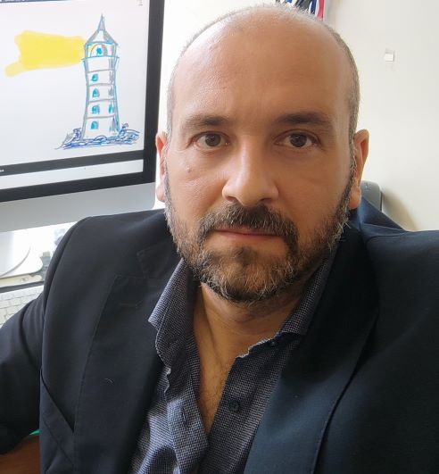
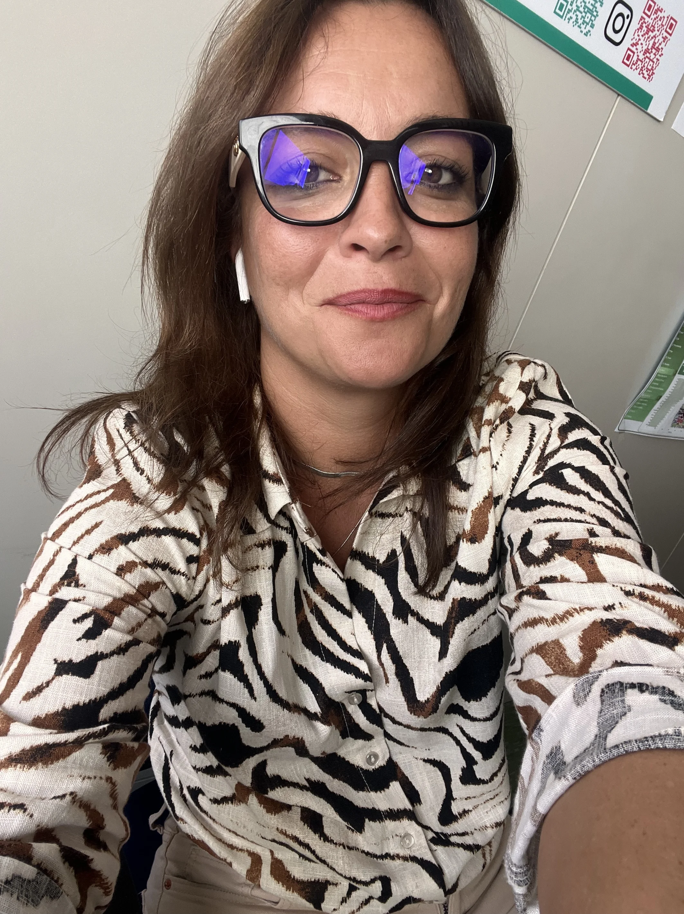

TALL is built by a small, collaborative team across three Italian universities and the K‑Synth academic spin‑off of the University of Naples Federico II — united by the belief that rigorous text analysis should be accessible to every researcher, regardless of programming background.


TALL has been showcased at national and international conferences in computational linguistics, statistics, and digital humanities.
TALL synthesises a decade of methodological research on text mining, semantic analysis, and reproducible software.
We welcome feedback, contributions, and research partnerships. Open an issue on GitHub or reach out directly.